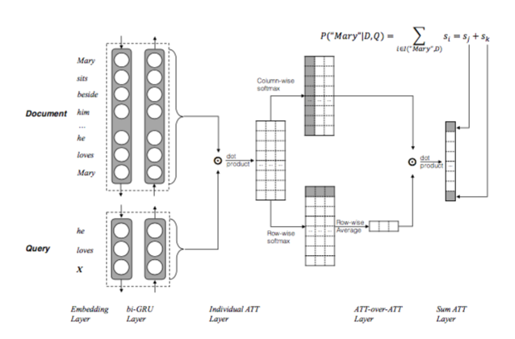
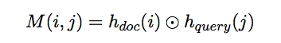
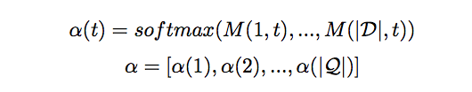
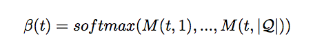
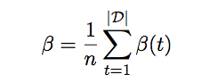
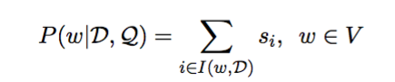
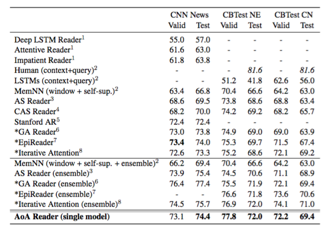

Attention-over-Attention Neural Networks for Reading Comprehension #PaperWeekly#
本文分享的文章是arxiv今天刚刚新鲜出炉的paper，来自哈工大讯飞联合实验室。前不久，他们构建了一个大型阅读理解语料，今天也发布出来了。(下载地址)
Cloze-style Reading Comprehension这个领域竞争太过激烈了，半年时间把benchmark刷了一遍又一遍，今天的这篇paper又一次刷新了记录。如果对这个领域不太熟悉的话，可以读这篇教机器学习阅读。
本文的模型被称作Attention over Attention(AoA)，和之前的工作不同，不仅仅考虑query-to-document attention，而且考虑了document-to-query attention。模型架构示意图如下：

Contextual Embedding 将query和document都embedding化，用Bi-GRU将query和document分别encode，将两个方向的hidden state拼接起来作为该词的state，此时document和query可以分别用一个Dxd和Qxd的矩阵来表示，这里D是document的词数，Q是query的词数，d是embedding的维度。
Pair-wise Matching Score

这一步是本质上就是对两个矩阵做矩阵乘法，得到所谓的Matching Score矩阵M，这里的M矩阵的维度是DxQ，矩阵中的每个元素表示对应document和query中的词之间的matching score。
Individual Attentions 对M矩阵中的每一列做softmax归一化，得到所谓的query-to-document attention，即给定一个query词，对document中每个词的attention，本文用下式进行表示：

Attention-over-Attention 前三个步骤都是很多模型采用的通用做法，这一步是本文的亮点。首先，第三步是对M矩阵的每一列做了softmax归一化，这里对M矩阵的每一行做softmax归一化，即得到所谓的document-to-query attention，用下式来表示：

然后，将document-to-query attention作平均得到最终的query-level attention，如下式：

最后，用每个query-to-document attention和刚刚得到的query-level attention做点乘，得到document中每个词的score。
Final Predictions 将相同词的score合并，得到每个词的score，如下式：

从而得到最终的答案。
实验部分用了英文语料CNN和CBT，在没用pre-trained embedding情况下，单模型得到了state-of-the-art结果。

本文模型最大的特点就是不仅仅考虑query到document的attention，而且考虑了document到query的attention，即所谓的attention over attention，在Cloze-style阅读理解任务中取得了更好的结果。同时，作者在未来的工作中，准备将该模型拓展到其他任务中。
attention是一个非常好的机制，将很多任务的benchmark都提高到了很高的水平，是一个革命性的模型。围绕attention的变种做工作，提出各种各样的attention，虽然可以刷新各种任务，但终究不再能够将研究水平提升一个level，需要一个新的机制、新的思想来推动nlp的发展。